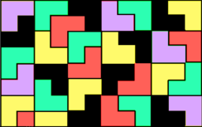

|

|
|
Abstract:
We consider tromino tilings of m×n domino-deficient rectangles, where 3|(mn−2), and characterize all cases of domino removal that admit such tilings, thereby settling the open problem posed by Ash and Golomb in [J. Marshall Ash, S. Golomb, Tiling Deficient Rectangles with Trominoes, Integre Technical Publishing Co., Mathematics Magazine (2003), 46–55]. We suggest a procedure for tiling domino-deficient rectangles based on this characterization. We also consider general 2-deficiency in n×4 rectangles, where n≥8, and characterize all pairs of missing squares which do not permit a tromino tiling.
|

![[PHOTO]](../../images/knight_small.png)